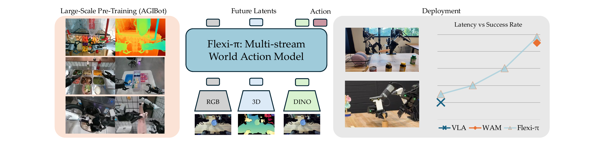
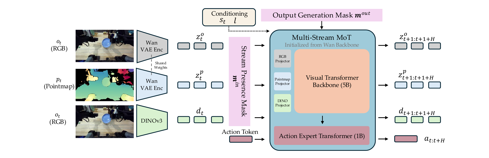
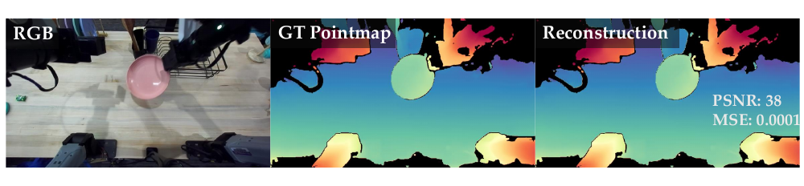
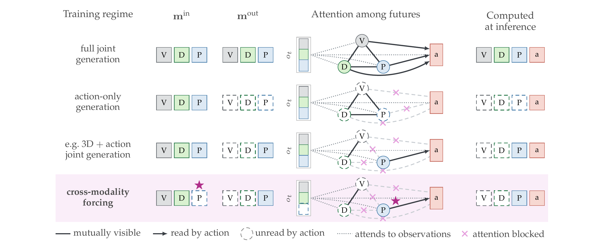

Preprint · World-Action Models for Dexterous Manipulation
Flex-π: A Latent and 3D World-Action Model with Compute Flexibility
One checkpoint. Any observed inputs, any generated futures — pick the speed–accuracy operating point at deployment.
*Equal contribution.
Abstract
World-action models (WAMs) that jointly predict future observations and actions have recently outperformed parameter-equivalent vision-language-action models on manipulation, but three limitations hamper their deployment: they predict in pixel space, lack explicit 3D grounding, and bake their inference cost in at training time.
We introduce Flex-π, a single policy that resolves all three through one design principle: every visual signal a manipulation policy needs — RGB, 3D, and object semantics through DINO — can be embedded into a shared, pre-trained latent space. Because every modality lives in the same latent space, applying independent per-stream dropout on inputs and joint outputs during training yields a single checkpoint that supports any combination of input and output streams at inference, to support compute and input flexibility.
After pre-training on AGIBOT World and fine-tuning per benchmark, Flex-π matches or outperforms the strongest VLA baseline in fast, action-only output mode and exceeds the strongest WAM baseline at full joint generation on RoboTwin and LIBERO, and significantly outperforms π0.5 on held-out generalization tasks on a real bimanual YAM robot.

← scroll figure →
Overview
Flex-π in action
One checkpoint, deployed on a bimanual YAM workcell across contact-rich, sub-millimetre and long-horizon tasks — from teleoperated data collection through to self-repair.
Placeholder footage. Clips on this page stand in for layout while our own recordings are prepared — they come from public robotics project pages and do not show Flex-π rollouts. Every number quoted alongside them is from the paper.
How it sees the world
Three views of one moment, in one latent space
Flex-π reads the same observation three ways — appearance, geometry and object semantics — and generates all three futures alongside the action. Pick a stream to follow it through the model.
Appearance. The observation image, encoded by a frozen Wan-2.2 VAE into latent tokens that inherit spatiotemporal priors from internet-scale video pre-training.
The pointmap and DINO panels are illustrative renderings of the same clip, shown to convey what each stream carries — they are not model output. The paper's real VAE pointmap reconstruction is in Figure 3 below.
Real robot · bimanual YAM
Dexterous manipulation in the real world
Three contact-rich tasks on a stationary bimanual YAM workcell — two 6-DoF arms, 14 commanded degrees of freedom, three calibrated stereo cameras. Each demands precise bimanual coordination and sustained contact. Rollouts are scored under a partial-credit rubric, averaged over 10 rollouts per task.
The fast action-only path already beats π0.5 on every task while matching its latency; enabling joint visual generation adds a further +12, +5 and +45 points. Averaged over the three tasks, Flex-π (Joint) reaches 88.0% against 44.7% — nearly 2×.
Sourcing: Flex-π's per-task scores and the +12/+5/+45 deltas are stated in the paper; the Average group is the unweighted mean of the three per-task scores rather than a value the paper prints. π0.5's scores on Put Plate on the Rack and Sort Utensils are read from the paper's Figure 8, which carries no data labels — only its Handover + Rack value (15%) is given in prose.
Pushing the limits
Sub-millimetre precision, held between two moving hands
In Key Unlocking the robot grasps a key, hands it to the other arm, picks up the padlock with the now-free hand, and inserts the key into the keyway of the handheld lock. Neither object is fixed to the workspace — what the policy controls is the relative pose of two independently actuated end-effectors, compounded by in-hand pose uncertainty that becomes unobservable the moment the grippers close.
That tolerance sits at or below the single-pixel scale of the policy's visual input, so the policy cannot simply read residual misalignment off one observation. It has to infer that misalignment from sub-pixel and temporal cues, or resolve it through contact — retrying rather than committing to an open-loop approach.
Self-repair gripper — eight dependent stages
The robot repairs its own gripper over eight stages that must be completed in order, with the workspace splitting the sequence between the arms. Half of the rubric's 3.0 points sits on the three insertion and fastening stages, so a policy cannot score well by transporting objects competently and failing at the tolerances. The tolerance chain tightens as the sequence advances.
Highlighted rows are the three insertion and fastening stages, which together carry half of the 3.0 available points.
A policy that clears each stage nine times in ten still finishes the whole episode only 43% of the time, so a progress score alone cannot separate a policy that nearly finishes from one that finishes. Moving from action-only to full joint generation adds 21.9 points of partial credit but 40 points of full-task success (15% → 55%) — the two metrics separate exactly the policies that chain eight stages from those that merely start them well.
Held-out conditions
The gap widens sharply under distribution shift
We re-run the same three tasks under conditions never seen during fine-tuning: novel distractor objects added to every scene, and — for Put Plate on the Rack — an unseen plate and rack of a different type. These settings isolate whether a policy learned the skill or merely fit the training distribution.
Where the baseline breaks
π0.5 degrades severely once appearance cues stop being reliable. Flex-π holds, because success depends on geometry and contact rather than on matching what the scene looked like in training.
Handover + Rack with distractors. π0.5 collapses to ~5%; Flex-π (Joint) holds at ~80%. The action-only path reaches ~45%, so joint visual generation is worth a further 35 points here — substantially more than it is worth in-distribution.
An unseen plate and rack. Flex-π (Joint) reaches 98% on object geometry it has never seen, against 70% for π0.5 — the skill transfers rather than the appearance.
Four held-out variations
The advantage is most pronounced exactly where appearance cues become unreliable and success demands geometric and physical rather than appearance-based generalization — echoing the LIBERO-Plus trend.
Halving the data
Flex-π (Joint) degrades least — −20.0 points against −37.5 for π0.5.
The core idea
Everything a manipulation policy needs, in one latent space
Appearance, geometry and semantics are usually three separate pipelines. Flex-π carries appearance and geometry in the latent space of a single frozen video-generation VAE, and projects frozen DINOv3 semantics into the same shared backbone — so one model reads and writes all three.
RGB — appearance
The observation image, encoded to latent tokens that inherit spatiotemporal priors from internet-scale video pre-training.
Enc(ot) · frozen Wan-2.2 VAE
Pointmap — 3D geometry
A 3D pointmap pushed through the same frozen VAE. Surprisingly, an encoder trained only on RGB reconstructs pointmaps well — 38 dB PSNR on the example in Figure 3 — so its latent space is immediately useful for encoding scene geometry.
Enc(pt) · shared VAE weights
DINO — object semantics
Object-level semantic tokens that ground the other two streams in an object-centric representation. Patch grids are folded 2×2 into the channel dimension, removing 75% of the tokens losslessly.
DINO(ot) · frozen DINOv3

← scroll figure →
Why latents instead of pixels
The strongest WAMs predict future images, spending capacity and inference time on pixel-level detail that does not aid control. Flex-π keeps the joint prediction objective but runs it in latent space: it reconstructs future latent observations, stripping away irrelevant visual noise while still inheriting the priors of a large pre-trained video model. Because actions are generated jointly with future visual tokens under shared self-attention, the policy benefits from the model's evolving representation of the future without the computational bloat of pixel-level decoding.

Flexible training
One checkpoint, any observed inputs, any generated futures
Two independent per-stream masks are sampled on every training example. Because they are sampled rather than fixed, a single run covers every deployment regime — and at inference the masks become choices.

← scroll figure →
Stream dropout, sampled per example
Each training sample draws an input presence mask min over the three visual input streams and an output attention mask mout over the three future visual streams. Every entry is masked independently with 50% probability; rejection sampling on min guarantees at least one visual input survives, and the action stream is never masked.
Crucially, mout is an attention mask, not a loss gate: every future stream is always denoised and always incurs its flow-matching loss. What the mask changes is which futures the action tokens read, so actions are conditioned on a jointly generated future rather than on three independent ones.
Observed streams enter the backbone; the action expert reads the checked futures.
Cross-modality forcing falls out for free
Because the two masks are drawn independently, a stream dropped from the input is still denoised at the output: the model must synthesize that modality's future from whatever streams remain — imagining future pointmaps from RGB and DINO with no 3D input at all, or DINO semantics from RGB and geometry.
The benefit is not merely robustness to missing sensors. Requiring each modality to be predictable from the others prevents the shared backbone from degenerating into three weakly-coupled channels, and instead demands a representation in which appearance, geometry and semantics are mutually predictive. Ablating it — while holding the mask distribution fixed, so both models observe the same streams — costs 21.2 points of RoboTwin success.
Only the generation rule differs: restricting generation to the streams present in the input drops success from 66.4% to 45.2%.
Deployment-time choice
Slide along the Pareto frontier without retraining
The same weights, invoked with different flags. Toggle the streams Flex-π generates and watch the cost and the success rate move together.
The paper benchmarks four configurations, adding streams in this order: 68 → 139 → 280 → 398 ms. Per-stream costs are not reported independently, so other combinations are deployable but unmeasured.
A single checkpoint spans a 6× latency range and 25 points of success, leaving the operating point to be chosen at deployment. The four Flex-π points differ only in the output mask.
Flex-π's action-only path (118–152 ms) stays close enough to the π0.5 baseline (66 ms) to drive the same 30 Hz robot, while full joint generation trades speed for precision. Chunked execution decouples inference rate from control rate: the robot executes all 32 predicted steps before the next chunk is planned, re-planning once every 1.07 s of robot time.
Simulation benchmarks
Best VLA in fast mode, best WAM in full mode — from one model
On RoboTwin the action-only path already beats every VLA we compare against, while full joint generation leads the WAMs. The two deployment modes land within half a point of each other.
| Method | Clean | Rand. | Avg. |
|---|---|---|---|
| Vision-language-action models | |||
| π0 (2024) | 65.9 | 58.4 | 62.2 |
| X-VLA (2025) | 72.9 | 72.8 | 72.9 |
| π0.5 (2025) | 82.7 | 76.8 | 79.8 |
| Flex-π (action-only) | 93.5 | 93.6 | 93.6 |
| World-action models | |||
| Motus (2025) | 88.7 | 87.0 | 87.8 |
| Fast-WAM (2026) | 91.9 | 91.8 | 91.8 |
| LingBot-VA (2026) | 92.9 | 91.6 | 92.2 |
| Flex-π (full joint) | 92.9 | 93.3 | 93.1 |
The gap is widest under domain randomization: π0.5 loses 5.9 points moving from clean to randomized scenes, while Flex-π loses none — which we attribute to the 3D and DINO streams providing appearance-invariant structure.
Flex-π leads at every data scale, with the largest margin at low data: at 50 demos per task it reaches 78.8% against 41.9% for Fast-WAM and 31.4% for π0.5. Baselines only close the gap at 500 demos per task.
LIBERO
One flexible checkpoint already matches the strongest published method in each group — 98.1% action-only and 98.5% at full joint generation. Committing that flexibility and fine-tuning a checkpoint per mode lifts the pair to 98.7% and 99.2%, ahead of every VLA and WAM we compare against.
| Method | LIBERO | LIBERO-Plus |
|---|---|---|
| Vision-language-action models | ||
| π0 | 94.1 | 53.6 |
| π0.5 | 96.9 | 84.7† |
| GR00T-N1 | 93.9 | — |
| OpenVLA-OFT | 97.1 | 69.6 |
| UniVLA | 95.2 | 42.9 |
| X-VLA | 98.1 | — |
| Flex-π (action-only) | 98.7 | — |
| World-action models | ||
| LingBot-VA | 98.5 | — |
| Fast-WAM | 97.6 | 65.3† |
| Flex-π (full joint) | 99.2 | — |
†Neither Fast-WAM nor π0.5 reports LIBERO-Plus, so those entries are our own evaluations of the released checkpoints. Flex-π's LIBERO-Plus evaluation is still in progress and is therefore not reported here.
Which streams actually matter
DINO adds 6.8 points over video alone; pointmaps on top of both add a further 20.0. The 3D stream is worth roughly three times what the semantic stream is, on top of it.
Conclusion
What this buys, and what it costs
Flex-π embeds RGB, 3D and DINO semantics into a shared latent space, yielding a single checkpoint that supports any combination of input and output streams at inference. It matches or beats the strongest VLA in fast action-only mode and the strongest WAM at full joint generation across RoboTwin, LIBERO and a real bimanual YAM robot. Inference compute flexibility emerges as a natural consequence of multi-stream latent dropout.
Citation
BibTeX
@article{yan2026flexpi,
title = {Flex-$\pi$: A Latent and 3D World-Action Model with Compute Flexibility},
author = {Yan, Ge and Liu, Jinghao and Fan, Yuzhi and Cai, Lei and
Liao, Minwen and Zhang, Jesse and Fox, Dieter},
journal = {Preprint},
year = {2026}
}